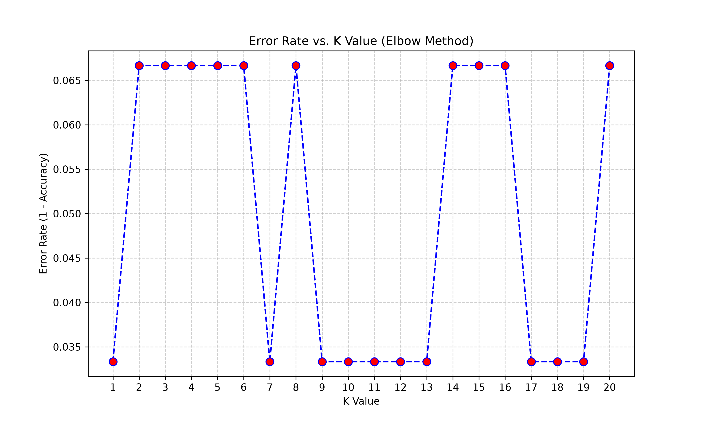

Query Configuration
Predicted Class
Setosa
Confidence: 100%
Vote Breakdown
2D Scatter Plot Visualizer
Setosa
Versicolor
Virginica
Query Point (You)
Performance Metrics (K = 5)
93.33%
Model Accuracy
0.93
Macro F1 Score
Confusion Matrix
| Actual \ Predicted | Setosa | Versicolor | Virginica |
|---|---|---|---|
| Setosa | 10 | 0 | 0 |
| Versicolor | 0 | 10 | 0 |
| Virginica | 0 | 2 | 8 |
Classification Report
| Class | Precision | Recall | F1-Score | Support |
|---|---|---|---|---|
| Setosa | 1.00 | 1.00 | 1.00 | 10 |
| Versicolor | 0.83 | 1.00 | 0.91 | 10 |
| Virginica | 1.00 | 0.80 | 0.89 | 10 |
Elbow Method Optimal K Search
The graph below illustrates the classification error rate calculated for K values ranging from 1 to 20. The optimal K is selected at the minimum error rate to avoid underfitting or overfitting.
